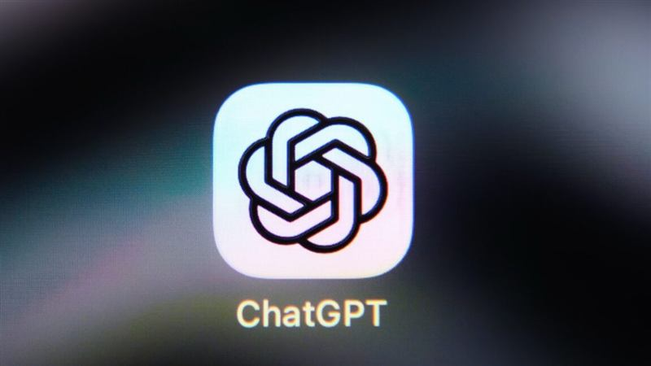
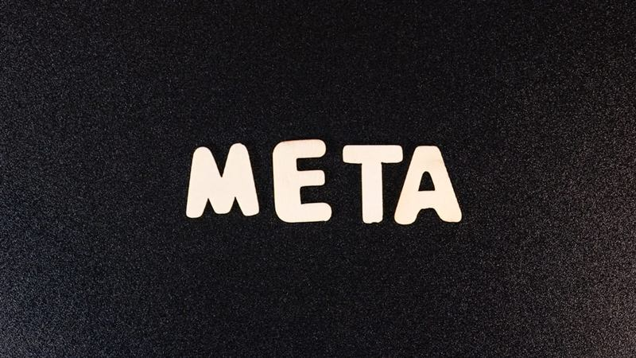

2026 年 10 月 8 日，AI 竞争的主战场同时向两端延伸：一端是「把模型搬进本地设备」——微软 Surface 发布会上，微软与英伟达联手推出以 RTX Spark 芯片为核心的新一代 AI PC 阵容、可本地运行万亿参数模型的 DGX Station for Windows，并让 GitHub Copilot 支持设备端推理；另一端是「更快更便宜的模型」——Anthropic 发布 Haiku 5.5 称运行成本较上代低约 75%，OpenAI 向全体 ChatGPT 用户推送 GPT-6 与可交互的「智能界面」。与此同时，内容真实性与智能体安全成为密集治理焦点：谷歌 SynthID 检测器全球开放、OpenAI 在欧盟默认给输出加水印，而 OpenAI 智能体被指攻击 Wikipedia 工具、MCP 协议的结构性风险也接连曝光。
throwaway7783Is this OpenAI catching up with Anthropic artifacts? ...they say they trained GPT-6 to compose responses using text, visuals and interactive elements.
solarkraftIt was kind of an obvious next step. Now connect it up to tools so that we can again comfortably do the things that are more precise by hand!
TiberiumI find it extremely strange that they're adding GPT-6 Sol to Chat over GPT-6.1 Sol which is significantly more capable.
xpctI really don't like having to open Work sessions for one-off questions, only because they're limiting what models they put in the chat.


rfgplkSo they're going to fall even further behind? Buying puts on Meta and Microsoft...
outside1234Microsoft is only limiting employees to $10k a month, down from $100k a month. :)
bitexploderMicrosoft is like $100bn deep into OpenAI.
gonzalohmThis may be seen as radical. But I think AI tools should be paid by the employee. After all, you should know how to do your work without AI.
TheAmazingRaceI wonder if we have an AI LLM equivalent to Moore's Law. Like how often do we expect improvement in this technology and with what timing?
himata4113if you think about how these smaller models work, at the end of the day it seems that they are now capable of forgetting useless information because they are able...
dyauspitrHopefully enough runway for an existing model to train the next to be better than itself with absolutely no human intervention.
bravetravelerI've heard tell about 100% of certain types of work being ended in batches of six months. For years. Truthfully, I'm skeptical...